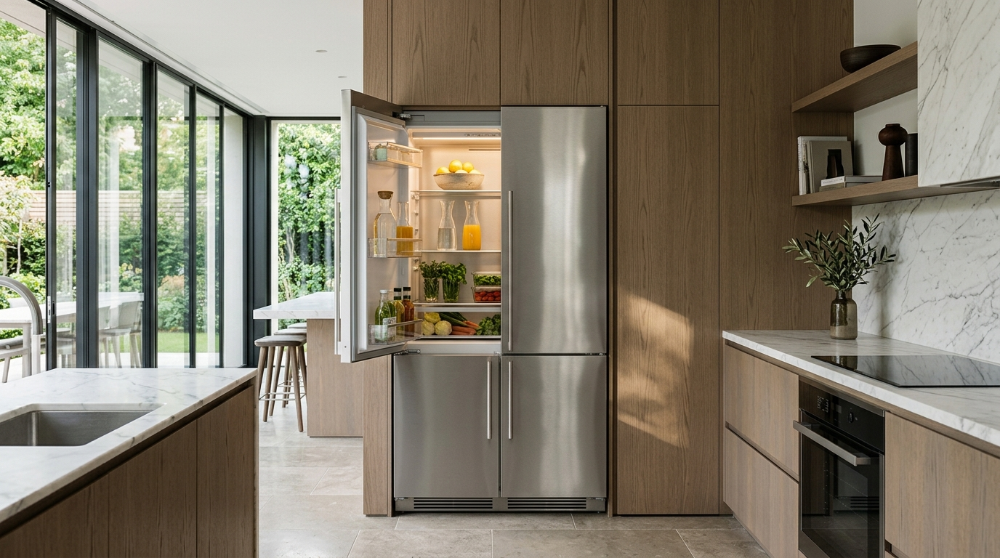
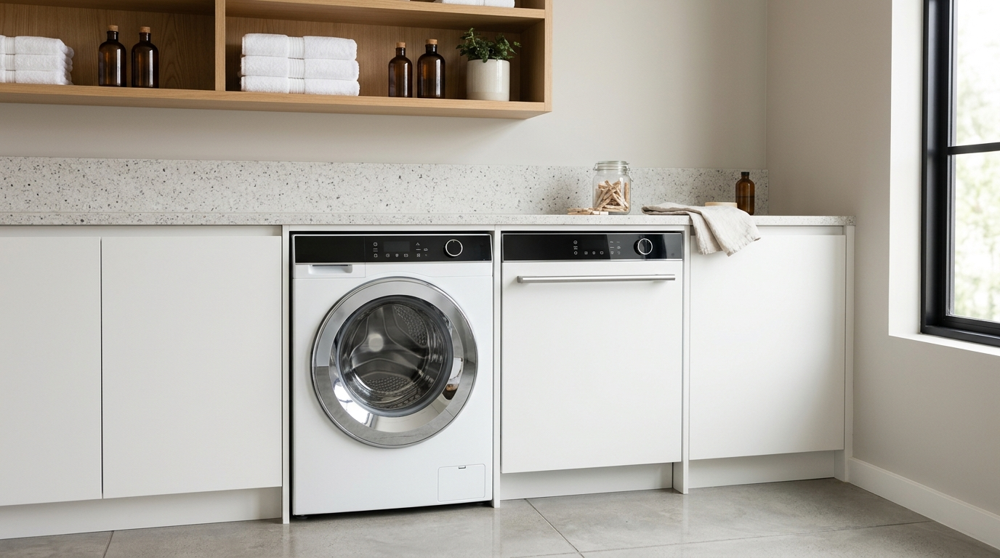
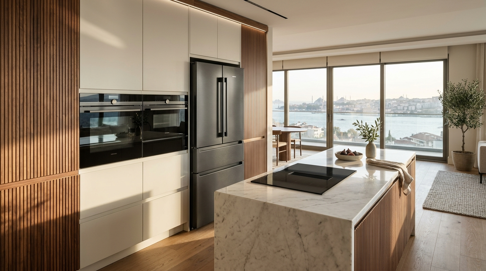

Ort. 35 DkVan Saray Bosch Buzdolabı Yetkili Servisi
Bosch No-Frost ve gardırop tipi buzdolaplarında soğutmama, inverter kompresör, gaz dolumu, fan ve kart onarımı.
📞 Tıkla Ara: 0850 380 02 02Van Saray genelinde tüm Bosch (Beyaz Eşya, Ankastre & Kombi) cihazlarınız için 2 gezici yetkili servisi aracımızla ortalama 40 dakikada adresinizdeyiz. 12 ay orijinal yedek parça ve işçilik garantisi.

Numaranızı bırakın, Van Saray Bosch Yetkili Servisi uzman teknisyenimiz hemen arasın.

Ort. 35 DkBosch No-Frost ve gardırop tipi buzdolaplarında soğutmama, inverter kompresör, gaz dolumu, fan ve kart onarımı.
📞 Tıkla Ara: 0850 380 02 02Bosch çamaşır ve bulaşık makinelerinde su boşaltmama, kazan rulman, pompa, AquaStop ve rezistans değişimi.
📞 Tıkla Ara: 0850 380 02 02
Ort. 40 DkBosch ankastre fırın/ocak, yoğuşmalı kombi, inverter klima ve LED TV modellerinde 1 yıl garantili yerinde onarım.
📞 Tıkla Ara: 0850 380 02 02Makine kazan içindeki suyu boşaltamıyor, sıkma adımına geçmeden duruyor.
Musluk işareti yanıyor, tahliye pompası makine kapalıyken bile sürekli çalışmaya devam ediyor.
Soğuk hava deposu veya endüstriyel dolap hedef +2°C / -18°C derecesine inmiyor, evaporatör karlanma yapıyor.
Makine kazan içindeki suyu boşaltamıyor, sıkma adımına geçmeden duruyor.